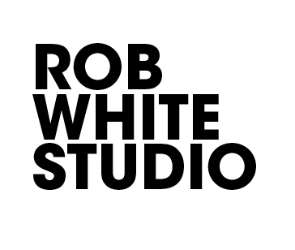

Painting
Original Works
Compositions developed through surface, restraint, gesture, and studio process.

Independent artist studio
Rob White Studio brings more than 25 years of artwork, design, and craftsmanship into one working practice. The studio moves between painting, sculpture, framing, printing, CNC work, and specialty builds with the same attention to proportion, surface, structure, and finish.
About
The work is independent, material-led, and precise. Projects can begin as an artwork, a practical studio need, a fabrication problem, or a custom object that requires judgment across several disciplines.
Version 0.2 of this site is intentionally simple: a public studio presence now, with a structure that can grow into project archives, estimating tools, client workflows, and studio management later.
Artwork
Painting
Compositions developed through surface, restraint, gesture, and studio process.
Object
Dimensional work informed by construction, material behavior, and finish.
Studio
Documentation of tests, assemblies, notes, tools, and evolving bodies of work.
Services
Commissioned and available works, with attention to scale, surface, and placement.
Objects, dimensional studies, display pieces, and material-driven custom work.
Handcrafted frames, canvas stretching, finishing, and artwork presentation.
Large-format print production for studio, artwork, signage, and specialty surfaces.
Cutting, routing, prototyping, jigs, panels, and precise repeatable components.
Hybrid jobs that combine design, fabrication, finishing, installation, and problem solving.
Journal
A place for process notes, project documentation, materials, pricing systems, and business development as the platform grows.
Contact